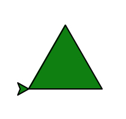
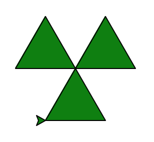
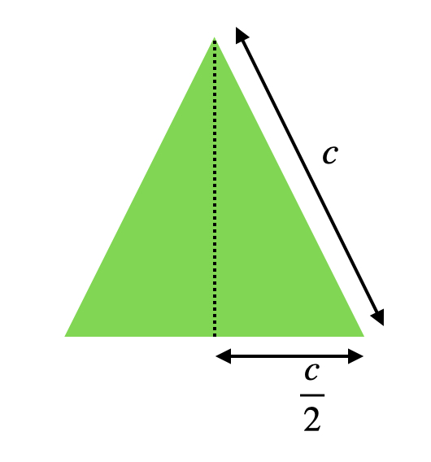
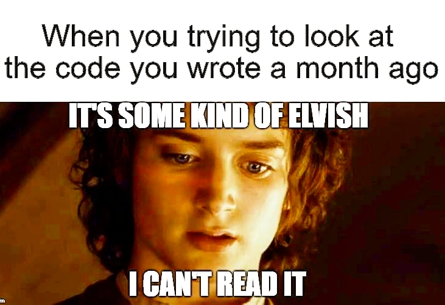

5. Fonctions⚓︎
Ce chapitre est la pierre angulaire de tout langage informatique !
Pour tous les exercices, vous pouvez valider vos réponses avec le petit gendarme : votre fonction sera alors testée sur des cas de base. Ces cas vous aident à comprendre pourquoi votre fonction n'a pas encore le fonctionnement attendu.
5.1 Principe⚓︎
Pourquoi les fonctions ?
Les lignes suivantes permettent de convertir une température de degré Fahrenheit vers degré Celsius.
temp_fahrenheit = 60
temp_celsius = temp_fahrenheit - 32 * (5/8)
- Dans le terminal ci-dessous, tester ce programme pour convertir 60 degrés Fahrenheit en degrés Celsius. Afficher la valeur référencée par la variable
temp_celsius. Pro tip : dans la console, utiliser la touche Tab pour compléter un mot dont vous aurez écrit le début.temp_f+ Tab doit écriretemp_fahrenheit. - On souhaite maintenant convertir 90 et 120 degrés Fahrenheit en degrés Celsius. Ajouter les lignes correspondantes.
Solution
temp_fahrenheit = 60
temp_celsius = temp_fahrenheit - 32 * (5/8)
print(temps_celsius)
temp_fahrenheit = 90
temp_celsius = temp_fahrenheit - 32 * (5/8)
print(temps_celsius)
temp_fahrenheit = 120
temp_celsius = temp_fahrenheit - 32 * (5/8)
print(temps_celsius)
On remarque qu'il y a beaucoup de répétitions dans le code, même si nous avons utilisé des variables. Notez que l'on pourrait éventuellement utiliser une boucle :
for temp_fahrenheit in [60, 90, 120]:
temp_celsius = temp_fahrenheit - 32 * (5/8)
print(temps_celsius)
Il est toutefois difficile de comprendre ce que fait ce programme.
Le principe DRY va encore être ici à l'oeuvre : la structure fonction va permettre de simplifier un programme en évitant les répétitions inutiles et complexes à débogger. Cette structure va rendre également le code plus abstrait.
Cours
Une fonction permet de créer des blocs d'instructions que nous pouvons réutilisons quand nous le souhaitons. C'est une boite noire indépendante du reste d'un programme :
- nous pouvons la tester et contrôler son fonctionnement de manière indépendante ;
- elle découpe le problème en sous-problème plus simple à résoudre ;
- nous pouvons la réutiliser dans d'autres programmes.
Exemple
Pour construire une voiture, on ne fait pas tout en même temps :
- on a par exemple besoin de convertir de l'énergie thermique (ou électrique) en énergie mécanique. Pour cela, on "crée" une fonction nommée
convertir_énergie_thermique_en_énergie_mécaniquequ'on appelle aussi le moteur ; - la conversion de l'énergie thermique en énergie mécanique va fonctionner car le moteur a été testé de manière indépendante lors du développement du modèle de voiture ;
- on le réutilise ensuite pour la production à la chaîne.
Nous nommerons nos fonctions avec des noms d'action : calculer_moyenne, trier_tableau ou afficher_résultats.
5.2 Définir une fonction⚓︎
Cours
Pour définir une fonction en Python, on utilise la syntaxe suivante :
def nom_de_la_fonction(parametre1, parametre2, ... ):
... instructions ...
... instructions ...
... instructions ...
return résultat1, résultat2, ...
Une fois definie, la fonction appelée nom_de_la_fonction peut être utilisée n'importe où dans le programme.
En Python, l'indentation des instructions appartenant à la fonction est obligatoire.
Important
return est l'instruction permettant de renvoyer des résultats en dehors de la fonction.
Toute variable non renvoyée par return sera perdue dans la boîte noire !
Important
Dans ma grande bonté, je vous propose quelquefois des fonctions où seul le titre es présent (on appelle cela un prototype).
Pour éviter une erreur, le mot-clé pass apparaît dans la fonction : il indique à Python de ne rien faire. Quand vous commencez à écrire la fonction, supprimez pass.
Nous allons tout de suite étudier divers cas particuliers importants.
5.3 Exemple de fonctions⚓︎
5.3.1 Fonction sans paramètres⚓︎
Les fonctions sans paramètres sont des raccourcis pour éviter de retaper plusieurs fois les mêmes instructions. Leur utilité est très limitée : si vous les utilisez, ce sera pour des utilisations très spécifiques.
Exercice
On donne la fonction ci-dessous.
- Exécuter le programme.
- Dans la console, écrire
compter()(on dit que vous appelez la fonctioncompter()). - Observer le résultat et expliquer celui-ci.
- Dans la console, faire deux autres appels à la fonction
compter(). Que remarquez-vous ?
Explications
Quand vous avez appelé la fonction dans la console, Python a regardé quelque part dans la mémoire s'il existait une fonction appelée compter(). Il l'a trouvé car nous avons exécuté le programme : ensuite la fonction se déroule.
Cette fonction affiche des informations et ne renvoie aucune valeur : on lui demande de renvoyer la valeur None.
On donne la fonction ci-dessous.
- Sans l'exécuter, dire ce que permet de faire la fonction écrite dans l'éditeur.
- Exécuter le programme.
- Dans la console, afficher la valeur de
vitesse_lumière. - Modifier le programme en remplaçant la ligne 5 par
vitesse_lumière = c. Exécuter le programme et comprendre l'erreur affichée.
Remarque importante
Une variable peut référencer la valeur renvoyée par une fonction. C'est ce que fait : vitesse_lumière = calculer_célérité().
Remarquez toutefois que lorsque vous avez écrit vitesse_lumière = c, vous avez obtenu une erreur : NameError: name 'c' is not defined. Cela signifie que la variable c n'existe pas en dehors de la fonction.
La course des Animaux est un jeu qui permet de déplacer trois types d'animaux sur un plateau :
- le Zèbre a 1 chance sur 2 de se déplacer de 6 cases ou de reculer d'une case ;
- le Lion a 1 chance sur 2 de se déplacer de 5 cases ou de ne pas se déplacer du tout ;
- l'Éléphant a 1 chance sur 4 de se déplacer de 4 cases, et sinon, il se déplace de 2 cases.
En vous inspirant de la fonction ci-dessous, écrire une fonction calculer_déplacement_lion et calculer_déplacement_éléphant permettant de calculer le déplacement du Lion et de l'Éléphant.
- Compléter la fonction
placer_aléatoirement. Elle renvoie :- un entier aléatoire
xcompris entre 0 et 700 ; - un entier aléatoire
ycompris entre 0 et 400.
- un entier aléatoire
- Compléter la fonction
choisir_couleur. Elle renvoie :'red'si n vaut 0 ;'green'si n vaut 1 ;'blue'si n vaut 2 ;'purple'si n vaut 3.
- Exécuter le script. Dans la console, appeler la fonction
créer_tacheet observer le résultat. Comprendre l'affichage. - Dans la console, faire une boucle inconditionnelle appelant 10 fois la fonction
créer_tache.
Aide
Se rappeler la syntaxe des boucles inconditionnelles for _ in range(10).
5.3.2 Fonction avec paramètres⚓︎
Cours
Exemple
- Exécuter le code.
- Dans la console, taper
compter(5)puiscompter(10).
- La valeur n est appelée paramètre de la fonction
compter. - On dit qu'on passe le paramètre n à la fonction
compter. - Lorsque vous avez tapé
compter(5)da,ns la console, vous avez appeler la fonctioncompteravec l'argument 3.
Pour aller plus loin
Les annotations permettent de préciser à un utilisateur extérieur quel est le type des paramètres. Attention, cela n'impose pas le type du paramètres, c'est simplement une indication !
Pour indiquer que n est entier, on peut par exemple écrire :
def compter(n: int):
...
Pour plusieurs paramètres a flottant et n entier, on pourrait écrire :
def multiplier(a: float, n: int):
...
Nous le reverrons au chapitre 8 !
Exercices
- Écrire une fonction
fqui prend en paramètre un nombre flottantxet qui renvoie le nombre flottant2 * x + 1. - Exécuter votre fonction puis dans la console, écrire quelques tests. Par exemple :
f(1). - Tester la fonction avec l'icône gendarme.
- Compléter la fonction
calculer_aire_rectanglequi prend en paramètre deux nombres flottantslongueuretlargeuret qui renvoie l'aire du rectangle. - Ajouter une fonction
calculer_volume_boitequi prend en paramètre trois nombres flottantslongueur,largeurethauteuret qui renvoie le volume d'une boite. - Exécuter vos fonctions puis dans la console, écrire quelques tests. Par exemple :
calculer_aire_rectangle(1, 10). - Valider votre résultat avec l'icône gendarme !
- Écrire une fonction
est_divisible_parqui prend en paramètre deux nombres entiers positifsentieretdiviseuret qui renvoieTruesientierest divisible pardiviseur. - Exécuter votre fonction puis dans la console, écrire quelques tests. Par exemple :
est_divisible_par(10, 2). - Tester la fonction avec l'icône gendarme.
-
Écrire une fonction
valider_emailqui prend en paramètre une chaîne de caractèresemail.Cette fonction renvoie
Truesi la chaîne de caractères contient un arobase@. Une fois le parcours de l'adresse email avec une boucle inconditionnelle terminée, on renverraFalsesi l'arobase n'a pas été trouvé. -
Vérifier la fonction en appelant par exemple
valider_email("titou_du_01@live.fr"). - Valider avec l'icône gendarme.
- Écrire une fonction
sommerqui prend en paramètre un tableau non vide d'entierstableau. Cette fonction renvoie la somme des entiers présents dans ce tableau. - Ajouter une fonction
moyennerqui prend en paramètre un tableau non vide d'entierstableauainsi que son nombre d'élémentstaille. Cette fonction renvoie la moyenne des entiers présents dans ce tableau. Dans cette fonction, on utilisera la fonctionsommerdéfinie précédemment.
- Écrire une fonction
trouver_maximum_2qui prend en paramètre deux entiersaetb. Cette fonction renvoie la valeur du plus grand des deux entiers. - Exécuter le programme puis tester votre fonction dans la console avant de le valider avec le gendarme.
- Écrire une fonction
trouver_maximum_3qui prend en paramètre deux entiersa,betc. Cette fonction renvoie la valeur du plus grand des trois entiers. On pourra utiliser la fonction précédentetrouver_maximum_2. - Exécuter le programme puis tester votre fonction dans la console avant de le valider avec le gendarme.
Aide
Pour trouver le maximum entre trois nombres, on veut trouver le maximum M entre deux nombres a et b puis trouver le maximum entre M et le dernier nombre c.
5.3.3 Et si on n'a rien à renvoyer ?⚓︎
Cours
On a toujours quelque chose à renvoyer : en l'absence de valeurs à renvoyer, on écrira, return None.
Pour aller plus loin
En pratique, return None n'est pas obligatoire. Si une fonction ne contient pas le mot-clé return, Python rajoutera gentiment (et automatiquement) return None à la fin de votre fonction lors de l'interprétation du programme.
explicit is better than implicit : écrivez toujours return None.
Exercices
- Écrire une fonction
fqui prend en paramètre un nombre flottantxet qui affiche le nombre flottantx**2 + 1. - Réaliser les opérations suivants :
y = f(2)puisprint(y)? Expliquer le résultat.
Explications
print(f(2)) affiche :
>>> y = f(2)
5
>>> print(y)
None
L'appel y = f(2) se décompose en :
- en évaluation du résultat de ma fonction
f(2): c'est un affichage de2**2 + 1, suivi du renvoi deNonecomme résultat ; yréférence la valeur renvoyée qui estNone.
print(y) affiche donc bien None !
Dessin à obtenir

-
Compléter la fonction
trianglequi prend en paramètre :- une tortue graphique
tortue; - la longueur
côtédu triangle ; - l'abscisse initiale
xde la tortue ; - l'ordonnée initiale
yde la tortue.
Cette fonction dessine un triangle équilatéral de couleur verte dont le sommet en bas à gauche a pour coordonnées \((x, y)\).
- une tortue graphique
-
Exécuter votre programme et tester votre fonction dans la console.
Important
N'oubliez pas le return None !!!
Dessin à obtenir

-
Écrire une fonction
calculer_hauteurqui prend pour paramètre un côtécôtéet renvoie la hauteur d'un triangle équilatéral de côté c. -
À l'aide des fonctions
calculer_hauteurettriangle, créer la fonctionnucléaireayant pour paramètre une tortue graphiquetortueet le côtécôté. Le centre du symbole nucléaire est \((0,0)\).
Aide 1
Dessin

La hauteur d'un triangle équilatéral peut se calculer facilement en découpant le triangle équilatéral en deux triangles rectangles. On applique alors le théorème de Pythagore. Faites un dessin !!
Aide 2
Les Maths ne sont pas votre truc. Voici la formule : \(h = \dfrac{\sqrt{3}}{2} c\).
Important
Avez-vous pensé au return None !!! J'y tiens. Vraiment. Pour de vrai.
5.4 Utilisation de return⚓︎
Cours
Dans une seule fonction, il est possible de renvoyer plusieurs valeurs avec return.
Il suffit d'utiliser la syntaxe : return valeur1, valeur2, valeur3 ....
Exemple
Il est également possible de mettre plusieurs return dans une seule fonction.
Dans ce cas, return est comme un siège éjectable : dès que le programme voit une instruction commençant par return, la fonction s'arrête !
Exemple
texte est très différent de phrase. En effet, texte et lettre sont les paramètres de la fonction, comme le \(x\) de \(f(x)\) en Maths.
"a" et phrase (ligne 12) sont les arguments de la fonction, comme \(2\) de \(f(2)\) en Maths. Ce sont eux qui vont être analysés par la fonction.
Finalement, caractère est une simple variable de boucle qui n'existe que dans la fonction.
Danger mortel
N'oubliez pas le return ! Si vous n'utilisez que des print, vous ne faîtes que de l'affichage : les résultats de ces fonctions ne pourront en aucun cas être réutilisés dans un autre calcul !
Exercices sur return
On propose ci-dessous la fonction trouver_pair qui prend pour paramètre un tableau d'entiers et qui renvoie
- le booléen
Truesi un entier pair est présent dans letableau; -
le booléen
Falsesinon. -
Exécuter le code ;
- Dans la console, appeler la fonction
trouver_pairsur les tableaux[1, 3, 5],[8, 4, 10]et[5, 20, 5]. Que fais réellement cette fonction ? - Corriger la fonction pour obtenir le comportement attendu.
-
Écrire une fonction
trouver_répétitionqui prend pour paramètre une chaîne de caractèreslettreet une chaîne de caractèrestexte.Cette fonction renvoie :
- le booléen
Truedès que la lettrelettreest répétée plus d'une fois ; - le booléen
Falsesinon.
- le booléen
-
Exécuter le code ;
- Dans la console, à l'aide de la fonction
trouver_répétition, vérifier si la lettre"A"est répétée dans la chaîne d'ADN "ACCACGAC", vérifier également que la lettre"G"n'est pas répétée et que la lettre"T"n'est pas répétée.
Aide
Pensez à l'arrêt anticipé d'une boucle à l'aide d'un return.
- Écrire une fonction
translaterqui prend pour paramètre deux entiersvec_xetvec_y(coordonnées d'un vecteur) et deux entiersaetbpermettant de réaliser une translation de vecteur \((\vec a, \vec b)\). Cette fonction renvoie donc deux entiers résultant de la somme des abscisses et de la somme des ordonnées.
Aide
Pensez à la syntaxe valeur1, valeur2.
- Écrire une fonction
générerqui prend pour paramètre un entiernombre_bit. Cette fonction génère aléatoirement un nombre binaire denombre_bitbits, sous forme de chaîne de caractères. On utilisera un accumulateur et on utiliserastr(random.randint(0,1))pour générer des bits aléatoires sous forme de chaîne de caractères. - Écrire une fonction
décoderqui prend pour paramètre un nombre binairenombre_binaireécrit sous forme d'une chaîne de caractères. Cette fonction compte le nombre de 0 et le nombre 1 et renvoie quel bit apparaît le plus grand nombre de fois ainsi que le nombre d'apparitions.
Aide 1
On veut ajouter un nouveau bit à l'accumulateur un nombre exact de fois. Utilisez une boucle inconditionnelle.
Aide 2
Pensez à la syntaxe valeur1, valeur2.
5.5 Variables locales et globales⚓︎
Cours
On appelle portée d'une variable l'ensemble des endroits du programme où elle existe.
En théorie, il est possible d'accéder à des variables extérieures à une fonction.
Toutefois, pour simplifier notre travail, nous utiliserons des paramètres pour accéder à ces variables. Cela évite les effets de bord consistant à modifier des variables de manière inattendue.
Pour aller plus loin
Généralement, le langage de programmation cherche les variables en fonction de leur portée.
Ainsi, si une variable appelée dans une fonction n'y apparaît pas, Python va chercher si cette variable apparaît dans une fonction englobante.
Si cette variable n'y apparaît pas non plus, Python va chercher si cette variable apparaît dans le programme principal.
Si la variable est toujours absente, Python va rechercher si cette variable est une variable Python par défaut.
Exercices sur portée des variables
On dispose d'une fonction générer_tableau_entiers.
- Exécuter le code et dire ce que permet de faire cette fonction ;
- Modifier le programme afin d'afficher un tableau de 15 nombres aléatoires entre -5 et 5 ;
- Modifier le programme afin d'afficher deux tableaux : l'un composé de 10 nombres aléatoires entre -5 et 5 et l'autre de 20 nombres aléatoires entre -5 et 5 ;
- Ajouter un paramètre à la fonction afin de simplifier la réponse à la question précédente.
On dispose de la fonction sum_adder permettant de calculer la somme (sans retenue) d'un additionneur complet 1 bit. a, b et c_0 valent soit 0, soit 1.
- Pensez-vous que ce code fonctionne ?
- Exécuter le code et vérifier votre réponse à la question 1 ;
- Pourquoi ce code est-il compliqué à comprendre ?
- Corriger la fonction afin d'obtenir un comportement plus prévisible.
On dispose d'une fonction dessiner_polygone permettant d'ordonner à une tortue tortue de dessiner un polygone de n_côté de longueur L.
- Exécuter le code ;
- La tortue
freda-t-elle bien dessiné un polygone à six côtés, de longueur 40 ? Modifier la fonction afin de réaliser cette figure. - À la suite de l'hexagone, on souhaite maintenant réaliser un décagone de longueur 40 ainsi qu'un dodécagone de longueur 40. Faire cela en rajoutant deux instruction avant
fred.mainloop().
5.6 Documentation d'une fonction⚓︎
Cours
Pour écrire un code facilement compréhensible, nous avons jusqu'à maintenant utilisé le principe de de l'auto-documentation. On nomme toujours clairement nos variables et fonctions.
Exemple
Difficile de savoir ce que fait ce programme...
def f(t):
m = -1
for i in t:
if i > m:
m = i
return m
Beaucoup plus lisible !
def calculer_maximum(tableau):
maximum_actuel = -1
for nombre in tableau:
if nombre > maximum_actuel:
maximum_actuel = nombre
return maximum_actuel
Toutefois, il convient également de documenter les fonctions complexes que vous faites.
Documenter permet d'expliquer aux personnes qui ne sont pas familières avec vos fonctions de les comprendre :
- que fait-elle ?
- de quels types sont les paramètres ?
- un petit exemple.
Attention à ne pas trop documenter !
Exemple
def calculer_carré(x):
"""Calcule le carré d'un nombre
Paramètres :
x -- flottant ou entier
Exemple :
nombre = calculer_carré(2.0)
"""
return x**2
def calculer_carré(x):
"""Calcule le carré d'un nombre flottant ou entier"""
return x**2
def f(x):
return x**2
f = lambda m : (lambda _ : pow(_, 1))(m) * (lambda u : u)(m)
Souvent... Vous allez être la personne nécessitant la documentation. Rien de plus frustrant que de revenir sur un de vos codes non documenté et de passer quelques heures à retrouver comment il fonctionne.

Exercice
L'auto-documentation de cette fonction semble suffisante.
À partir de cette auto-documentation, ajouter une documentation adéquate.
5.7 Résumé⚓︎
Résumé
Dans ce chapitre, j'ai appris :
- l'intérêt des fonctions en programmation informatique ;
- à écrire une fonction simple ;
- la différence entre paramètres et arguments ;
- l'instruction
returnet ses subtilités ; - à documenter mes fonctions.
Une anecdote
En 1973, un robot est envoyé sur la Lune pour collecter des données. Celui-ci, une fois arrivé, affiche les données sur son écran avec l'équivalent de print.
Rien n'a été renvoyé sur Terre car l'équivalent de return n'a pas été utilisé !
En général, on souhaite faire quelque chose de nos données, pas les afficher.